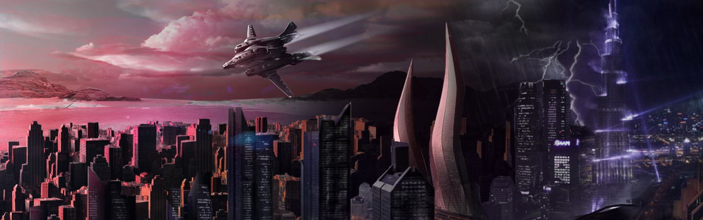

SYSTEM: HORUS

Excurs - System: Horus
Das Horus System ist für zwei Dinge bekannt: seine zwei Sprungpunkte in das Xi’An Reich und Serling, ein Planet mit einer der einzigartigen menschlichen Besiedlung im Universum. Für Jahre war Horus aufgrund seiner Verbindungen in das Reich der Xi’An ein Teil der Perry Line, einer Reihe von Niemandsland-Planeten, die einen Puffer zwischen den Spezies bilden. Deshalb war das System von jeglichem öffentlichen Zugang oder privaten Entwicklungen abgeschnitten. Inzwischen sind diese Verbindungen sein größter Gewinn und machen das System zu einer faszinierenden Perspektive für all diejenigen, die an Geschäften mit den Xi’An interessiert sind.
Horus wurde offiziell im Jahr 2528 von einer damals unbekannten Navjumperin namens Marie Sante entdeckt. Der Legende nach wurde das System allerdings bereits mehrere Jahre zuvor von der fünfzehnjährigen Sante gefunden, nachdem sie ein Schiff gestohlen hatte, um vor ihrer Familie auf Gonn zu flüchten. Sollte das wahr sein, muss sie den Großteil der dazwischen liegenden Jahre in einem herrenlosen System verbracht haben, alleine auf ihrem Schiff, da ihr Name in der gesamten Zeit trotz umfangreicher Überprüfungen in keinen UPE-Akten oder Landeregistern zu finden ist.
Die erste offizielle Vermerkung der UPE von Sante war ihr Antrag für die Registrierung der Entdeckung des Horus Systems, welches sie, vielleicht bezeichnenderweise, nach ihrem Schiff benennen lassen wollte.
Ein Besuch Serlings ist ein Muss für jeden, der an wahrlich einzigartigen Ausblicken interessiert ist, allerdings ist ein Leben unter solchen Bedingungen nichts für schwache Nerven. Serling wird von ständigen Stürmen geplagt, einem meteorologischen Nebeneffekt der Tatsache, dass eine Seite des Planeten die gesamt Hitze des Sterns abbekommt. Fotografen pilgern ständig nach Serling, um ein Bild von dem roten Stern des Systems zu erhalten, der am Horizont inmitten von gewaltigen Stürmen zu sehen ist. Dieses majestätische und surreale Bild wurde zum Symbol des gesamten Systems. Es brauchte einiges an Einfallsreichtum, um an einem Ort mit konstanten Lichtverhältnissen oder konstanter Dunkelheit beherrschbare Lebensumstände zu schaffen. Im Allgemeinen liegen die Arbeitsplätze näher an der hellen Seite, während die Wohnungen näher an der dunklen Seite gebaut sind. Das erschafft zumindest den Anschein eines normalen Tag/Nachtzyklus. Ein System aus Hochgeschwindigkeitszügen und Transportschiffen bewegen kontinuierlich Arbeiter von einer Seite zur anderen.
Da die Geschäfte auf der hellen Seite niemals schließen, gibt es dort reichlich Arbeit. Dennoch leiden einige Bürger an der psychologischen Belastung durch das Fehlen des natürlichen Rhythmus. Auch Touristen geht dies so, wenn sie auf der Welt ankommen. Zurzeit führt die Universität Aten, Serlings bekannteste Bildungsstätte, eine Langzeitstudie durch, um die Unterschiede zwischen Menschen aufzuzeigen, die unter solchen Konditionen aufblühen – das sind oft Menschen aus Familien, die bereits für mehrere Generationen auf dem Planeten gelebt haben – und denjenigen, die Probleme haben sich anzupassen.
Wie an den meisten Orten des Reiches verdienen diejenigen mit unerschöpflichen Mitteln am meisten – sogar unter diesen ungewöhnlichen Bedingungen. Die teuersten Immobilien des Planeten liegen in der Mitte der Terminatorlinie. Dort gibt es einen atemberaubenden andauernden Sonnenuntergang. Überwältigende architektonische Wohnhäuser, Appartements und Luxushotels sind darauf programmiert, sich an einen „täglichen“ Zeitplan zu halten, um in den Wohnungen den Anschein eines halbwegs normalen Tag/Nachtzyklus zu simulieren.

„Bevor wir den Refrain singen, lasst uns über Horus sprechen, ein System, das uns zweifelslos umbringen wird, aus Langeweile, nicht durch Krieg!“ – Guardians of the Jump, überliefertes Navy Matrosenlied, 27. Jahrhundert
Horus wurde offiziell im Jahr 2528 von einer damals unbekannten Navjumperin namens Marie Sante entdeckt. Der Legende nach wurde das System allerdings bereits mehrere Jahre zuvor von der fünfzehnjährigen Sante gefunden, nachdem sie ein Schiff gestohlen hatte, um vor ihrer Familie auf Gonn zu flüchten. Sollte das wahr sein, muss sie den Großteil der dazwischen liegenden Jahre in einem herrenlosen System verbracht haben, alleine auf ihrem Schiff, da ihr Name in der gesamten Zeit trotz umfangreicher Überprüfungen in keinen UPE-Akten oder Landeregistern zu finden ist.
Die erste offizielle Vermerkung der UPE von Sante war ihr Antrag für die Registrierung der Entdeckung des Horus Systems, welches sie, vielleicht bezeichnenderweise, nach ihrem Schiff benennen lassen wollte.
Horus I (Serling)
Der Planet, der den Spitznamen behielt, den Sante ihm in den ursprünglichen Berichten gegeben hatte, beheimatet eine der interessantesten menschlichen Besiedlungen. Weil eine Seite des Planeten fortwährend dem Typ-M Hauptsequenzstern des Systems zugewandt und die andere in Dunkelheit gehüllt ist, bleibt der Großteil des Planeten unbewohnbar. Allerdings fanden die Menschen heraus, dass ein Leben an der Terminatorlinie möglich war, der schmalen Streifen, welcher die helle und dunkle Seite des Planeten voneinander trennt und von einem Pol zum anderen verläuft.Ein Besuch Serlings ist ein Muss für jeden, der an wahrlich einzigartigen Ausblicken interessiert ist, allerdings ist ein Leben unter solchen Bedingungen nichts für schwache Nerven. Serling wird von ständigen Stürmen geplagt, einem meteorologischen Nebeneffekt der Tatsache, dass eine Seite des Planeten die gesamt Hitze des Sterns abbekommt. Fotografen pilgern ständig nach Serling, um ein Bild von dem roten Stern des Systems zu erhalten, der am Horizont inmitten von gewaltigen Stürmen zu sehen ist. Dieses majestätische und surreale Bild wurde zum Symbol des gesamten Systems. Es brauchte einiges an Einfallsreichtum, um an einem Ort mit konstanten Lichtverhältnissen oder konstanter Dunkelheit beherrschbare Lebensumstände zu schaffen. Im Allgemeinen liegen die Arbeitsplätze näher an der hellen Seite, während die Wohnungen näher an der dunklen Seite gebaut sind. Das erschafft zumindest den Anschein eines normalen Tag/Nachtzyklus. Ein System aus Hochgeschwindigkeitszügen und Transportschiffen bewegen kontinuierlich Arbeiter von einer Seite zur anderen.
Da die Geschäfte auf der hellen Seite niemals schließen, gibt es dort reichlich Arbeit. Dennoch leiden einige Bürger an der psychologischen Belastung durch das Fehlen des natürlichen Rhythmus. Auch Touristen geht dies so, wenn sie auf der Welt ankommen. Zurzeit führt die Universität Aten, Serlings bekannteste Bildungsstätte, eine Langzeitstudie durch, um die Unterschiede zwischen Menschen aufzuzeigen, die unter solchen Konditionen aufblühen – das sind oft Menschen aus Familien, die bereits für mehrere Generationen auf dem Planeten gelebt haben – und denjenigen, die Probleme haben sich anzupassen.
Wie an den meisten Orten des Reiches verdienen diejenigen mit unerschöpflichen Mitteln am meisten – sogar unter diesen ungewöhnlichen Bedingungen. Die teuersten Immobilien des Planeten liegen in der Mitte der Terminatorlinie. Dort gibt es einen atemberaubenden andauernden Sonnenuntergang. Überwältigende architektonische Wohnhäuser, Appartements und Luxushotels sind darauf programmiert, sich an einen „täglichen“ Zeitplan zu halten, um in den Wohnungen den Anschein eines halbwegs normalen Tag/Nachtzyklus zu simulieren.
Horus II
Die massive Wüstenwelt liegt inmitten eines grünen Bandes. Obwohl dem Planeten jegliche natürliche Gewässer fehlen, haben die Geometer und Wissenschaftler der UEE ernsthaft über die Kosten-Nutzen-Analyse eines Terraforming-Versuchs nachgedacht. Nachdem die xenoökonomischen Beziehungen sich verbesserten und verstärkten, gab es erhebliche Unterstützung von der Geschäftswelt, den Besiedlungsplan auf dem Planeten weiter zu verfolgen, einfach deshalb, weil Unternehmen, die auf Serling nicht Fuß fassen konnten, gerne Operationen auf einem eher traditionellen Planeten etablieren und den Vorteil eines einfachen Zugangs zum Xi’An Empire nutzen möchten.Horus III
Horus III ist einer der wenigen Super-Jupiter im UEE-Raum. Seine sehr dichte Atmosphäre macht diesen Planeten um ein Vielfaches schwerer als die meisten anderen Gasriesen. Durch zwei Asteroidengürtel von den inneren zwei Planeten getrennt, liegt Horus III in einer langen, verlassenen Umlaufbahn, weit weg von allem anderen im System.
Reisewarnung
Besuchern wird empfohlen, die Effekte von zu viel oder zu wenig Licht zu verfolgen sowie die damit verbundenen Erschöpfungs- und Depressionserkrankungen, wenn sie zu viel Zeit auf einer der beiden Hemisphären von Serling verbringen.Ein Flüstern im Wind
„Obwohl wir nie ganz sicher sein können, was uns hierher brachte, lässt Santes Tagebuch darauf schließen, dass sie zwei Dinge wahrlich liebte: ihr Schiff und das System, das sie entdeckte.“ – Kwame Jones, Das Herz von Horus, 2678„Bevor wir den Refrain singen, lasst uns über Horus sprechen, ein System, das uns zweifelslos umbringen wird, aus Langeweile, nicht durch Krieg!“ – Guardians of the Jump, überliefertes Navy Matrosenlied, 27. Jahrhundert